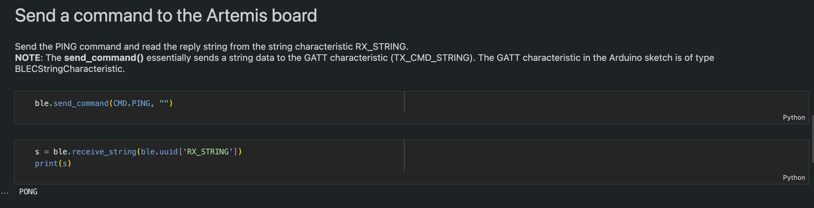
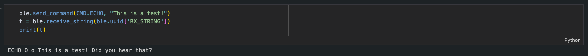
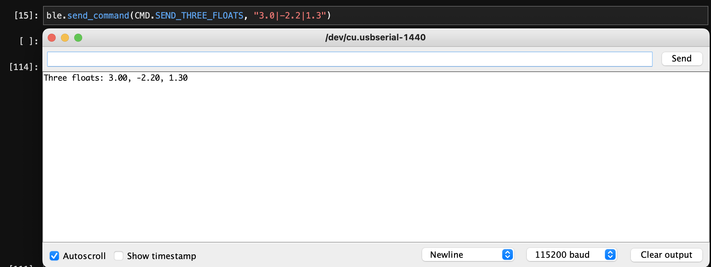
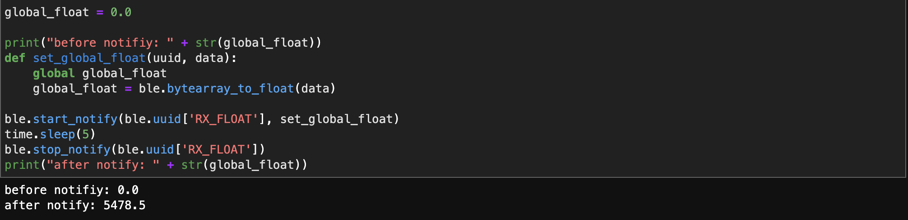

This lab deals with the Artemis Nano Board and its bluetooth capabilities. We will go through the connection of the board to our computer, as well as sending and receiving texts through Jupyter and Python, and end with implementing a notifier to update a global variable.
The first part of the lab was setting up our environment and
installing the required dependencies. Following the steps listed
on
this page, Python3 was installed, a virtual environment for the class was
created, and the packages used for this lab were successfully
installed.
After this, the files provided needed to be edited to reflect the
correct board, which would be done through the configuration.yaml
file. Connecting the artemis board to our IDE resulted in the
serial monitor printing out the correct MAC address, which was
then inserted into the config file so that our python application
could communicate with our board. Now that a successful connection
was established between the Artemis board and the computer, the
rest of the tasks could be accomplished.
Before moving onto the first task, we still need to test out that the connection was properly established. Although the connection status did correctly print out the MAC addresses for the respective devices, we can solidify our assurance by sending and receiving basic commands between our two devices. Below is a picture of the "Ping" command that would send our board a command, and receive back a string.
The first task was a simple echo command. The computer would send the echo command with a string, and would receive back the string padded with a prefix and a postfix.
case ECHO:
char char_arr[MAX_MSG_SIZE];
// Extract the next value from the command string as a character array
success = robot_cmd.get_next_value(char_arr);
if (!success)
return;
tx_estring_value.clear();
tx_estring_value.append("ECHO O o ");
tx_estring_value.append(char_arr);
tx_estring_value.append(" Did you hear that?");
tx_characteristic_string.writeValue(tx_estring_value.c_str());
Serial.println(tx_estring_value.c_str());
break;
The code for our echo command was pretty straightforward to implement. We initialize a variable that will hold the message sent along with the command. We clear our estring to make sure that it is properly initialized to be used in our echo command, and firstly append our prefix, followed by the message stored in our char_arr variable, and finally append a postfix. We set our characteristic string to be this new string that we concatenated, and also print to the serial monitor to check in real time if the code we wrote is correct. On the python side of things, we then receive the string that is stored in our tx_characteristic_string variable, and print it to the display.
The second task was a task that is very similar to an example command provided to us. In the example, we would send two ints, and in this command, we are going to send three floats. The implementation of this command is as follows:
case SEND_THREE_FLOATS:
float float_a, float_b, float_c;
success = robot_cmd.get_next_value(float_a);
if (!success)
return;
success = robot_cmd.get_next_value(float_b);
if (!success)
return;
success = robot_cmd.get_next_value(float_c);
if (!success)
return;
Serial.print("Three floats: ");
Serial.print(float_a);
Serial.print(", ");
Serial.print(float_b);
Serial.print(", ");
Serial.print(float_c);
break;
We initialize three float variables, and correctly assign them based on the inputs to our command (which is parsed by our get_next_value method). We then show that our board has access to these threee floats by printing it to the serial monitor.
The final task involves setting up a notification handler to receive a float value from the artemis board, and to store that float value using a callback function. The implementation was a pretty simple task once you know what needs to be done. We initialize a global variable, change that variable within a function, and call this function whenever our subscribed variable changes.
As said in the lab handout, there are two ways to receive a float value. One is to receive it directly as a BLEFloatCharacteristic type in the Arduino side, and the other is to receive a BLECStringCharacteristic, and to parse and convert it into a float value. Using the receive_float method would be ideal when receiving small, individual float values. Converting from a bytearray to a float value is efficient and needs no more computation. However, when receiving a plethora of different values, it becomes more efficient to combine the float values into a string on the arduino side and parse the string correctly on the computer side.